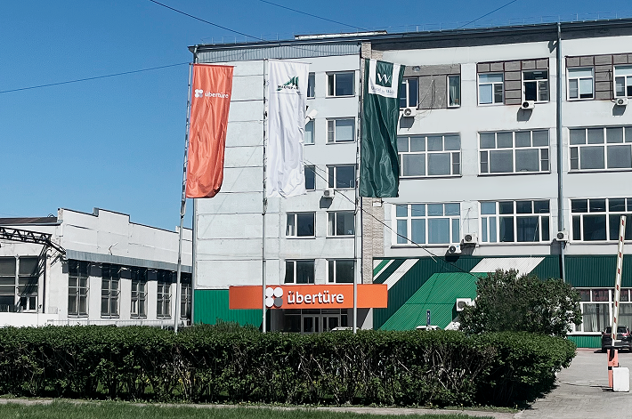
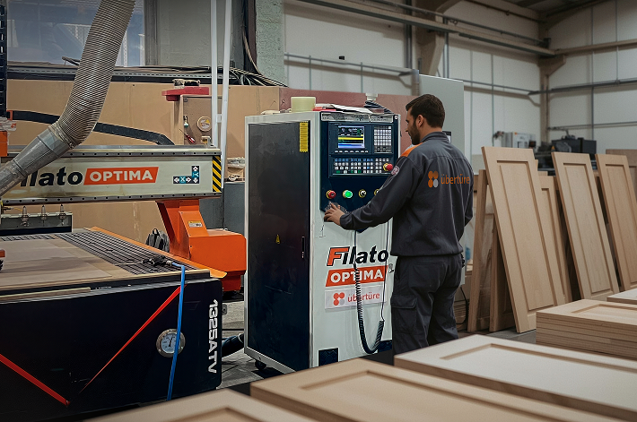
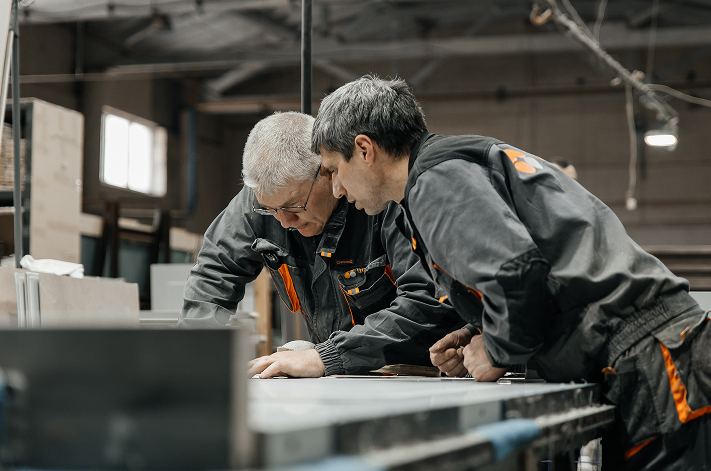
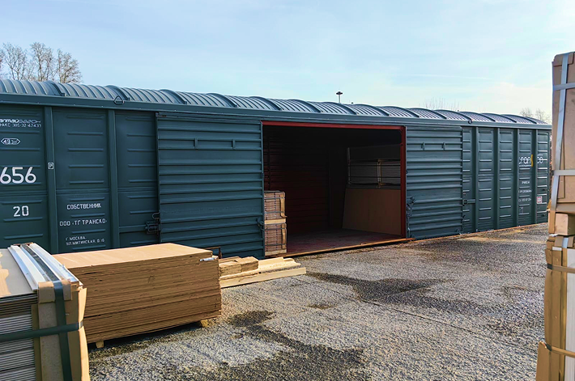

<section class="section section_padding section_bg-white">
    <div class="container">
        <div class="section__header">
            <div class="section__title-wrapper">
                <h2 class="section__subtitle">- производство -</h2>
                <h2 class="section__title">Факты</h2>
            </div>
        </div>

        <div class="content-list">
            <div class="content">
                <div class="content__image">
                    
                </div>
                <div class="content__main">
                    <div class="text">
                        <h2 style="color: var(--dark-color);">Российский производитель</h2>
                        <p>Производство Uberture расположено в городе Бердске, Новосибирской области. Завод основан в
                            1995 году, когда было принято решение первыми в России освоить производство декоративных
                            панелей на основе древесных плит. С 2007 года активно стало развиваться направление по
                            производству межкомнатных дверей.</p>
                    </div>
                </div>
            </div>
            <div class="content content_reverse">
                <div class="content__image">
                    
                </div>
                <div class="content__main">
                    <div class="text">
                        <h2 style="color: var(--dark-color);">Высокотехнологичное оборудование</h2>
                        <p>Продукция компании изготовляется на высокотехнологичном оборудовании Немецких фирм, таких как
                            "Paul", "Duspohl", "Fisher", "Weining", "Homag". Мы не стоим на месте и постоянно продолжаем
                            пополнять наш парк оборудования для усовершенствования качества выпускаемой продукции. На
                            производстве внедрены комплексные автоматические линиии для максимальной оптимизации
                            производственного процесса.</p>
                    </div>
                </div>
            </div>
            <div class="content">
                <div class="content__image">
                    
                </div>
                <div class="content__main">
                    <div class="text">
                        <h2 style="color: var(--dark-color);">Качество и сертификаты</h2>
                        <p>Мы поддерживаем систему тотального контроля соблюдения технологического процесса, что
                            позволяет гарантировать высокое качество продукции. Мы следуем строгим внутренним
                            стандартам, установленным для всех этапов производства, начиная с выбора сырья и заканчивая
                            финальной проверкой продукции. Наша политика добровольной сертификации подтверждает
                            соответствие продукции высоким стандартам качества Uberture, что делает нас надежным
                            партнером для клиентов и обеспечивает доверие к нашей продукции.</p>
                    </div>
                </div>
            </div>
            <div class="content content_reverse">
                <div class="content__image">
                    
                </div>
                <div class="content__main">
                    <div class="text">
                        <h2 style="color: var(--dark-color);">Собственный ж/д тупик и автомобильные пути</h2>
                        <p>Для оптимизации процесса платформа для погрузки построена прямо у склада готовой
                            продукции. Возможность единовременной отгрузки и выгрузки до 15 фур и контейнеров. Есть
                            собственный ж/д тупик, одновременно здесь можно обрабатывать до 10 вагонов. Все погрузочные
                            места соответствуют европейским стандартам.</p>
                    </div>
                </div>
            </div>
        </div>
    </div>
</section>